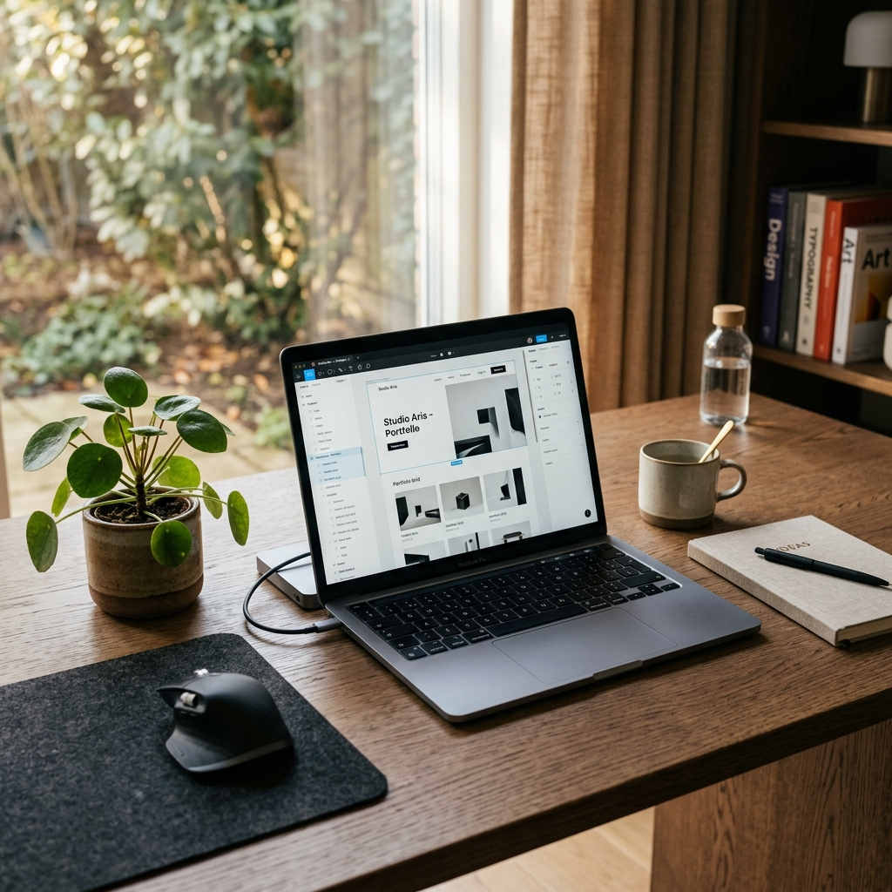

1997年、長野県生まれ。
高校時代にWebクリエイター科を専攻し、Web制作の基礎を習得しました。在校中から書いたコードが形になる楽しさに没頭する日々を過ごしました。
卒業後、知人のフリーランスエンジニアからの誘いをきっかけにプロとしてのキャリアをスタート。現場での厳しい要求に応えながら、実務における技術と知識を積み上げてきました。
現在はこれまでの経験を武器に、お客様一人ひとりの課題に寄り添い、想いを形にする制作に励んでいます。
「作って終わり」にしない。
Webサイトは公開してからが本当のスタートです。その先の運用や成果までを見据えた丁寧なヒアリングと、細部まで妥協しない制作スタンスを大切にしています。お客様のビジネスに寄り添うパートナーであることを心がけています。
Golf（長野の豊かな自然の中でプレーするのが一番のリフレッシュです）
Stance & Profile
「作って終わり」にしない制作。
高校時代にWeb制作の基礎を学び、フリーランスの現場で磨き上げた確かな技術力と柔軟性で、想いを正しく伝えるWebサイトを提供します。
公開後の運用や成果までを見据えた丁寧なヒアリングを重視し、お客様に寄り添うパートナーとして細部まで妥協せず向き合います。
Expertise
HTML5 / CSS3 (SASS) / Responsive Coding / WordPress構築 / JS / PHP
Tools & Systems
VS Code / Figma / Git / GitHub / Photoshop
Hobby
Golf（長野の豊かな自然の中でプレーするのがリフレッシュです）
1997年 長野県生まれ。これまでのWebクリエイターとしての経歴と、制作に込める想いのストーリーです。
Web制作との出会い
高校時代にWebクリエイター科を専攻し、デザインやHTML・CSSの基礎を本格的に学びました。書いたコードが画面上で実際に動く楽しさに魅了されました。
実務でのプロとしての歩み
卒業後、知人のフリーランスエンジニアからの誘いを受けプロの世界へ。実戦の現場で厳しい要求に対応しながら、技術力と柔軟性を磨き上げました。
想いを形にし、伴走する
現在は「作って終わり」にしないサイト制作を信条に、丁寧なヒアリングと徹底した品質管理を大切にしながら、お客様の課題解決に寄り添い続けています。